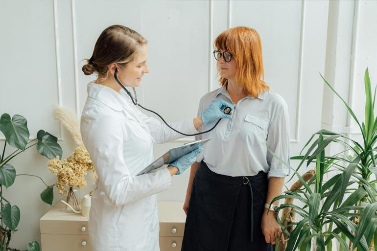
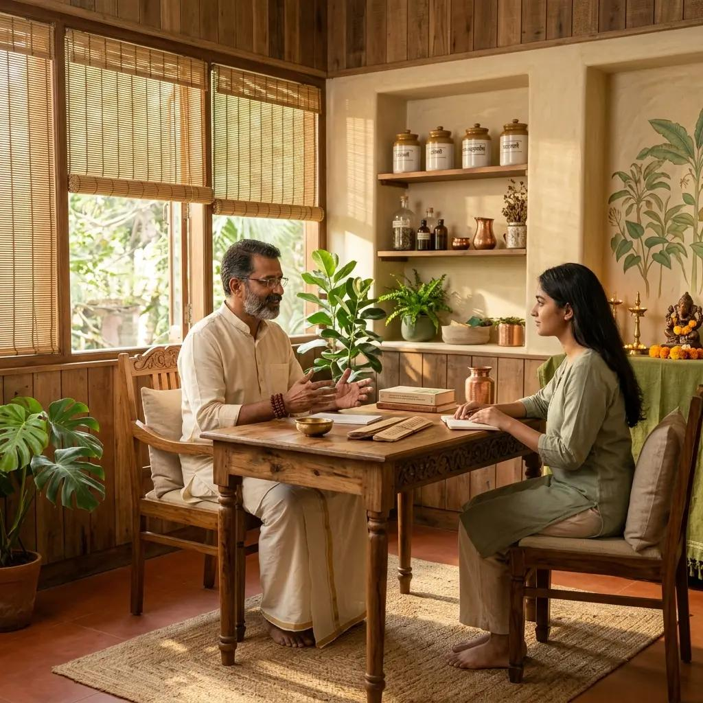
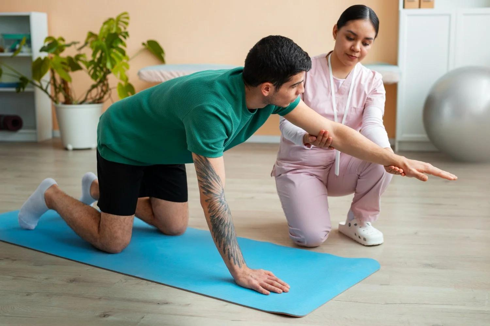

At Verdant Life, your care is steered by seasoned physicians who blend time-tested
naturopathic modalities with contemporary clinical understanding. We listen attentively,
evaluate your lifestyle context, and co-create an unhurried pathway to health
that supports your body's innate capacity for sustained recovery.
Dedicated clinical leaders specializing in clinical yoga therapy, thermal balneology, clinical nutrition, and neuro-somatic relaxation.
With over 14 years in naturopathic hospital leadership, Dr. Sharma champions non-invasive therapies that work in harmony with the body's innate homeostatic rhythms. Her clinical care maps out your lifestyle stressors before formulating gentle thermal and mud protocols.
Our physicians uphold five essential care principles, ensuring every patient is treated with dignity, safety, and evidence-informed natural therapeutics.

Principle 01We begin by listening deeply. Before prescribing any lifestyle recommendation, clinicians explore your stress triggers, physical comfort, and health history.

Principle 02We review your personal preferences: whether you gravitate toward hydrotherapy baths, gentle yoga, meditation quietude, or nutritional rebalancing.
Doctors transparently outline session structures, expected sensations, and preparation protocols so there are no surprises or ambiguities.

Principle 04Therapists provide precise, hands-on alignment, customized prop setups, and safe thermal parameter monitoring throughout your treatments.
We design specialized gentle pathways for seniors, post-rehab individuals, and those with physical limitations to ensure dignity and progress.
 Principle 06
Principle 06
Healing is sustained through continuity. We monitor progress via the Patient Portal, adjusting care roadmaps as your strength and vitality flourish.
Consultations take place in private, sound-buffered suites overlooking tranquil greenery. There are no rushed seven-minute appointments; we dedicate the time required to understand your complete health journey.